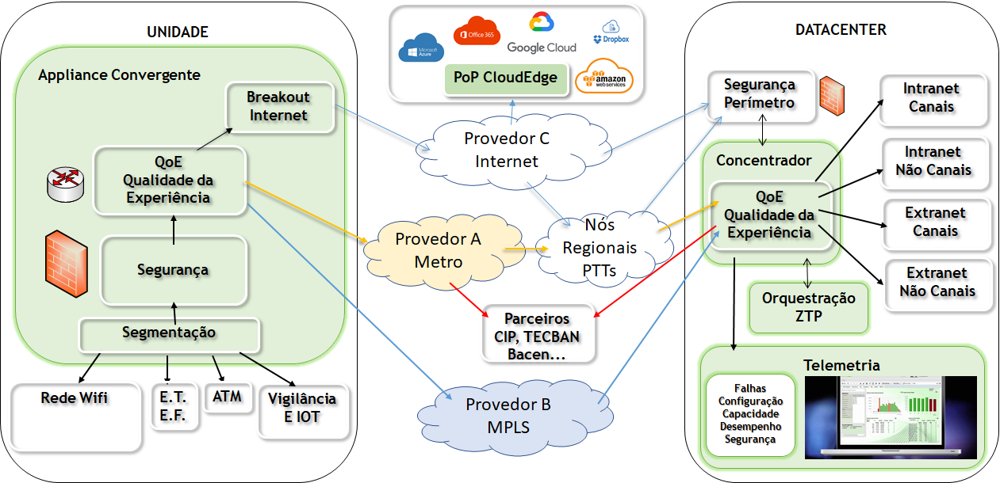
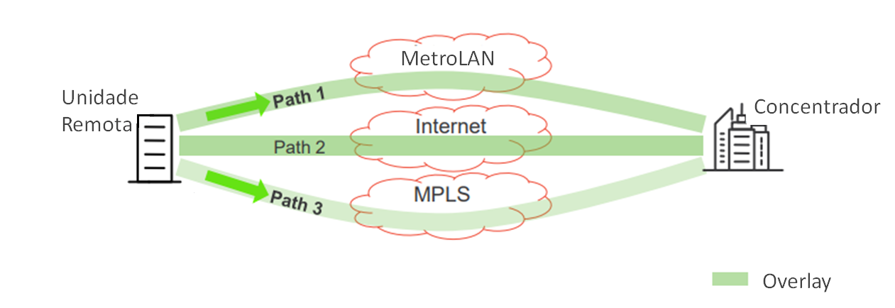
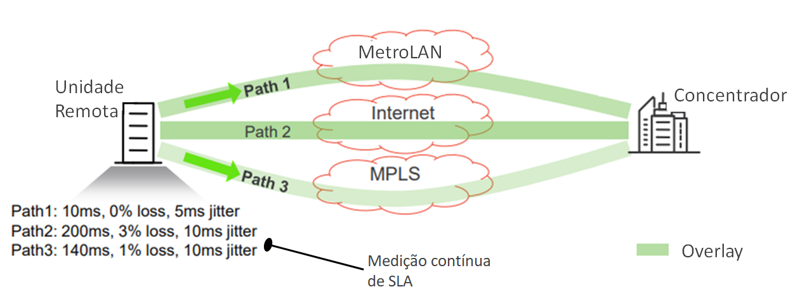

SDWAN SEGURO
Importante: Essa arquitetura de referência se encontra em fase de prospecção e não possui nenhum indicativo de uso geral pelas equipes.
Arquitetura de Solução
Esta arquitetura de referência faz parte da Arquitetura completa de rede de Comunicação da CAIXA.
Objetivo
A ampliação de uso de tecnologias baseadas em Internet disponibiliza aos negócios diversas oportunidades de redesenho e evolução rápida de serviços.
Neste sentido diversas empresas veem disponibilizando ambientes robustos para disponibilização de serviços em infraestrutura compartilhada, escalável e com grande flexibilidade de provisionamento (inclusive auto provisionamento).
As áreas de negócio deverão fazer uso destas soluções de forma cada vez mais ampla, para possibilitar o acompanhamento das necessidades dos clientes bem como para seu encantamento.
Portanto, é fundamental, atualmente, que o segmento de Tecnologia da Informação e Comunicação disponibilize às áreas negociais modelos flexíveis e escaláveis para implantação de seus produtos e serviços sem deixar de lado os requisitos de segurança exigidos em quaisquer soluções.
Por outro lado, deve-se salientar, os produtos Bancários são totalmente relacionados a soluções de Tecnologia da Informação, portanto dependem diretamente da qualidade e disponibilidade destas soluções.
Assim, é importante que os ambientes de tecnologia e telecomunicações estejam adequados em termos de capacidade, desempenho e segurança garantindo a melhor experiência para o usuário/cliente.
Neste contexto elaborou-se esta Definição da Arquitetura Tecnológica de rede para guiar a implantação de projeto de rede WAN segura definida por software com a apresentação das tecnologias envolvidas, especificações preliminares da solução, Topologias e cenários de utilização.
Este documento de arquitetura visa delinear os aspectos funcionais e organizacionais necessários para implantação de Solução de rede com recursos de SDWAN seguro, sob uma ótica abrangente ao mesmo tempo em que busca facilitar seu entendimento e principais casos de uso.
Tecnologias
Introdução
O mercado de telecomunicações vem sofrendo mudanças significativas nos últimos anos, impulsionado pela forte migração de serviços para rede pública (internet) com o uso de Datacenters em Nuvem e mobilidade.
-
Tais movimentos também atingem o setor bancário, sobretudo pela abertura de mercado promovido pelo BACEN em fomento a criação startups financeiras denominadas FINTECHs.
-
Este aumento de competitividade amplia a necessidade de readequação de modelos de negócio buscando aderência ao novo perfil do consumidor mantendo a necessidade de melhores relações entre custo e benefício.
A rápida evolução tecnológica tem apresentado inovações em tempos recordes a cada dia, exigindo das instituições grande aumento na sua capacidade de reinvenção e agregação de novas funcionalidades.
-
O mercado de tecnologia tem criado soluções que permitem às empresas a adoção rápida dessas novas tecnologias. Estes recursos, em sua grande maioria, encontram-se disponíveis através de Plataformas e/ou Software como Serviço (SaaS) em Datacenters em Nuvem podendo ser consumidos através de APIs diretamente na Internet.
-
Deve-se considerar, também, que as redes de dados privadas no Brasil possuem custos significativamente superiores em relação a conexões Internet. Desta forma, a alteração da nossa matriz de conectividade ampliando o uso de rede Internet poderá significar uma ampla redução nos custos de Rede de Dados.
Por outro lado, há um aumento crescente de ações maliciosas que visam encontrar fragilidades em ambientes tecnológicos com o objetivo de atingir vantagens financeiras e/ou simplesmente expor a Imagem das Instituições.
- Tal situação acarreta a necessidade de ampliação dos mecanismos de detecção e mitigação em amplo espectro, inclusive na estrutura de rede WAN.
Dentre as tecnologias conceituadas neste tópico estão SDWAN (Software Defined Wide Area Network), segurança de perímetro e criptografia e saída direta à internet (breakout internet) auditável.
SDWAN (Software Defined Wide Area Network)
A necessidade de entregas cada vez mais rápidas, associadas a ambientes cada vez maiores e complexos, requisitos amplos de padronização e mitigação de falhas operacionais fizeram surgir tecnologias que permitem o provisionamento de ambientes tecnológicos através de soluções centralizadas baseadas em software.
-
Estas soluções refletem o início de um novo ciclo de melhoria contínua nos processos de operações tecnológicas, que até então estavam baseadas em ações manuais e/ou automações pontuais.
-
As soluções “software defined” (definidas por software) visam aprimorar as tarefas de operações trazendo às corporações maior robustez nos seus processos de gestão permitindo melhorar a qualidade dos serviços de tecnologia com redução de custos.
No âmbito de rede temos o termo mais abrangente denominado SDN (Software Defined Network) que traz o conceito amplo de gestão de rede baseada em software.
- Neste documento será tratado o segmento específico de SDN que se refere a gestão de rede WAN baseada em software (SDWAN).
Características da tecnologia SDWAN
-
Dentre as características importantes da tecnologia SDWAN temos:
-
Provisionamento centralizado com ZTP (zero touch provisioning);
-
Roteamento de tráfego dinâmico inteligente e balanceamento de carga;
-
Medição de Qualidade de Rede e visão fim a fim;
-
Mitigação de perda de pacotes;
Provisionamento Centralizado com ZTP (zero touch provisioning)
-
Uma das grandes características das soluções de SDWAN é a possibilidade de efetuar provisionamento dos equipamentos de forma centralizada com nenhuma, ou pouca, interação técnica nos equipamentos físicos.
-
Esta funcionalidade é conhecida como provisionamento sem contato (ZTP – zero touch provisioning) e visa evitar a necessidade de pré-configuração dos equipamentos em unidade de TI e/ou envio de técnico especializado para campo para ativação de equipamento na unidade fim.
-
Desta forma tem-se um ganho significativo de agilidade e custo visto que os equipamentos podem ser encaminhados diretamente para a unidade fim e sua instalação ser feita por um profissional de menor conhecimento técnico.
-
Existem algumas tecnologias que apoiam esta funcionalidade, mas basicamente trata-se da criação de templates de configuração na ferramenta centralizada de provisionamento na qual o equipamento buscará sua configuração específica.
-
Para que este recurso funcione o equipamento deve possuir conectividade com a ferramenta de provisionamento, isto pode ser feito através de conexão via internet, através de recursos pré-definidos em DHCP (Dynamic Host Configuration Protocol) e/ou customizações efetuadas diretamente no fabricante.
-
É comum atualmente que os fabricantes disponibilizem ambientes em nuvem para gestão dos ativos e suas configurações. O ponto de atenção neste caso é quanto a segurança visto que o gerenciamento dos equipamentos ocorrerá diretamente pela Internet.
Roteamento de tráfego dinâmico inteligente e balanceamento de carga
-
Para permitir o entendimento deste recurso, é importante esclarecer as diferentes formas de roteamento de tráfego em rede de dados, baseadas em roteamento estático e roteamento dinâmico.
-
O roteamento estático é feito através da inclusão de rotas manualmente nos roteadores do ambiente de forma a direcionar o tráfego para a interface onde determinado serviço ou subrede poderá ser alcançada. Nesta situação, normalmente, a solução funciona na modalidade ativo-standby, e não é possui quaisquer mecanismos para detecção de qualidade do caminho de forma que a comutação para a contingência ocorre apenas com a indisponibilidade da interface diretamente conectada ao roteador.
-
O roteamento dinâmico é um modo de distribuição do rotas de forma automática entre dois ou mais roteadores. Para esta funcionalidade são utilizados protocolos especializados que mantém adjacências entre roteadores diretamente conectados nos quais as rotas para os serviços são distribuídas de forma automática e bidirecional. O plano de roteamento é, normalmente, pré-definido através de métricas estáticas de forma que as comutações ocorrem quando as rotas deixam de ser propagadas em virtude de falhas nas conexões entre os equipamentos. Assim, da mesma forma como no roteamento estático não se costuma ter alterações no plano de encaminhamento de tráfego por problemas de qualidade uma vez que a criação e administração de probes é manual o que a torna bastante complexa em ambientes de grande porte.
-
Já no caso das soluções de SDWAN, o roteamento é associado diretamente aos serviços avaliando o caminho de rede fim a fim.
-
Em SDWAN o tráfego flui entre um equipamento de peer sdwan e um concentrador. Algumas soluções são baseadas em tuneis que são formados entre o peer remoto e o concentrador através de cada caminho possível.
-
Os concentradores são instalados nos pontos de divulgação de serviços, assim cada concentrador divulga dinamicamente para os peers remotos os serviços que são alcançáveis através dele.
-
Este modelo permite que a qualidade de rede fim a fim entre os pontos seja avaliado em conjunto com a alcançabilidade dos destinos, e isto possibilita que o tráfego seja encaminhado pelo melhor caminho para atendimento ao nível de serviço esperado para cada serviço.
-
Além disto, é possível criar políticas de distribuição de tráfego com balanceamento dos serviços por caminhos distintos. Esta ação costuma ser complexa em se tratando de redes tradicionais visto que os fluxos bidirecionais acabam ficando assimétricos (envia por um circuito e recebe por outro).
Medição de Qualidade de Rede e visão fim a fim
-
Como comentado no item anterior, as soluções de SDWAN são orientadas a encaminhar o tráfego através de um concentrador.
-
Esta condição possibilita que seja avaliado todo o caminho de rede entre o peer remoto e o concentrador.
-
Assim, através de protocolos proprietários, as soluções efetuam medições de qualidade de cada caminho entre cada peer remoto e cada concentrador.
-
Basicamente são avaliadas métricas de alcançabilidade, latência e perda de pacotes que permitem a tomada de decisão de roteamento de acordo com o melhor caminho para determinado serviço.
Mitigação de perda de pacotes
-
Outro recurso bastante comum em soluções de SDWAN é a disponibilização de tecnologia para reduzir as perdas de pacotes.
-
Tal tecnologia foi desenvolvida, principalmente, para permitir o uso massivo de circuitos internet, visto que estes circuitos costumam possuir níveis de qualidade variáveis de acordo com horários, provedor, dia da semana, dentre outras condições.
-
Normalmente trata-se de protocolo proprietário, mas que em geral funciona de forma semelhante entre diferentes fabricantes.
-
Este mecanismo costuma ser chamado de FEC (Forward Error Corretion) que funciona incluindo pacotes de paridade na comunicação que permitem a restauração de pacotes perdidos na rede.
-
O recurso dispõe de versões adaptativas, onde a quantidade de pacotes de paridade é variável de acordo com o índice de perda da conexão.
-
Estendendo a funcionalidade de FEC existem soluções que permitem a duplicação de pacotes utilizando caminhos distintos, o que evidentemente deve ser utilizado com cautela uma vez que produz significativo aumento no consumo de rede.
-
Em soluções mais avançadas, tanto o recurso de FEC quanto o de duplicação de pacotes pode ser habilitado por serviço, assim, pode ser habilitado para aplicações mais sensíveis como tráfego de tempo real (voz / imagem) e / ou que atendem a sistemas transacionais de missão crítica e desabilitado para os demais serviços.
Segurança de Perímetro e Criptografia
As soluções de SDWAN buscam permitir o uso de circuitos internet como meio de transmissão.
-
Esta característica agrega à solução uma necessidade de aprimoramento dos requisitos de segurança.
-
Uma solução convencional, onde a conectividade é provida por circuitos de dados privados, a segurança é provida pelo isolamento da rede pública no próprio provedor de telecomunicações.
-
Porém, quando se pretende fazer uso de Internet, onde todos os computadores do mundo possuem acesso, há que se observar o tamanho desta exposição e buscar mecanismos para minimizar seus riscos.
-
Neste contexto esta Arquitetura de Referência inclui este tópico específico para explicar alguns itens de segurança comuns nas soluções mais avançadas de SDWAN.
Criptografia entre endpoints
-
Considerando a possibilidade do tráfego corporativo através de circuitos internet é fundamental que seja garantida a impossibilidade de leitura desses dados durante este trânsito.
-
Mecanismos de criptografia de pacotes criam uma camada adicional de segurança que impede agentes maliciosos a visualizarem os dados trafegados.
-
As soluções de SDWAN já implementam nativamente soluções de criptografia permitindo seu uso em redes públicas.
Proteção antiDDoS e anti intrusão
-
Da mesma forma, considerando a exposição à internet, algumas ações maliciosas visam penetração nos ambientes corporativos e outras apenas prejudicar o funcionamento de seus ambientes.
-
Para estes casos deve-se considerar funcionalidades de proteção para minimizar a possibilidade de acesso indevido ao ambiente interno ao mesmo tempo dispor de recursos para suportar ataques de negação de serviço (DDoS – Distributed Denial of Service) mantendo-se operacional.
-
Evidentemente que a disciplina de anti-DDoS é extensa e não se espera que um equipamento de pequeno porte seja totalmente imune a esses ataques, já que até mesmo os de grande porte não são, porém é esperado que o equipamento possua mecanismos para permanecer ativo e acessível para implantação de contramedidas (ainda que manuais) mesmo sob ataque.
SSL inspection
-
Com a expansão do uso de criptografia nos serviços, qualquer análise detalhada sobre o tráfego que está passando pelos equipamentos requer mecanismos de decriptografia dos pacotes.
-
As soluções utilizam tecnologias que permitem a abertura dos pacotes através do registro do certificado no equipamento ou simplesmente atuando como man in the middle, neste caso a abertura conexão do cliente é feita com o equipamento através de certificado próprio e este efetua a conexão com o destino.
-
Algumas aplicações impedem o uso das técnicas citadas o que pode significar a impossibilidade de inspeção do seu tráfego, nestes casos deve-se avaliar pelos times de segurança se seu uso pode ser liberado.
Antivirus e antimalware
-
A partir das técnicas de inspeção supracitadas bem como da análise de reputação dos sites/serviços acessados é possível identificar situações em que há risco de propagação de elementos maliciosos tais como vírus e malwares.
-
Neste caso existem diversas técnicas para mitigação destes riscos, dentre as quais categorização de sites com seu bloqueio em consultas DNS, inspeção de arquivos e links através de sandbox, dentre outras.
Políticas baseadas em usuário
-
Por se tratar de uma solução que visa a melhoria da experiência do usuário é importante que seja possível implantar políticas correlacionadas ao usuário ou aos perfis de usuário.
-
Tais regras permitem que os acessos sejam disponibilizados conforme a necessidade do usuário, restringindo na origem as tentativas não permitidas.
-
Além disto, é possível direcionar o tráfego conforme o tipo de usuário bem como alocar limites de banda de acordo com sua necessidade.
-
A criação de políticas baseadas em usuário é um dos pontos principais para implantação de acesso direto à internet visto que as regras de permissão são dependentes do perfil de cada um.
Saída Direta à Internet (breakout internet) auditável.
Com a ampliação na disponibilização de serviços na internet, sobretudo aqueles em nuvem tais como SaaS (Software as a Service), deve-se rever o modelo de saída à Internet centralizado. A rede Internet é uma rede onde todos os dispositivos podem se conectar entre si diretamente.
Os modelos com saída à Internet centralizada não são otimizados, já que costumam consumir mais recursos da corporação como links de Datacenter e provocam um aumento na latência de rede para o usuário.
Apesar de conceitualmente ser bastante desejável que os acessos à internet ocorram diretamente das unidades fim, isto deve ser feito considerando alguns aspectos:
-
Regras de Acesso: Capacidade para customizar quais acessos cada usuário ou grupo de usuários pode ter;
-
Rastreabilidade: Possibilidade de identificar qual acesso cada usuário fez de forma a cumprir os requisitos legais;
-
Inspeção: Capacidade para habilitar e desabilitar a inspeção de pacotes para sites / serviços específicos;
PRINCÍPIOS
PRINCÍPIOS ARQUITETURAIS
A arquitetura do ambiente deve obedecer aos seguintes princípios:
-
Alta disponibilidade
-
Alto desempenho
-
Baixa latência
-
Segurança
ALTA DISPONIBILIDADE
A solução deve permitir a implantação de conexões por múltiplos caminhos.
Redundância de equipamentos pode ser utilizada em unidades críticas.
ALTO DESEMPENHO: BAIXA LATÊNCIA
O acesso a sistemas transacionais deve ocorrer por conexões de menor latência quando comparada a outras conexões com a mesma qualidade.
As configurações devem ser otimizadas visando a redução de overheads.
SEGURANÇA
Quanto ao quesito segurança, deve-se observar a implantação das proteções citadas no item Tecnologia sobretudo quando em uso de conexões internet.
ARQUITETURA DEFINIDA
Arquitetura macro

Esta figura representa uma topologia macro da solução onde são apresentados os componentes envolvidos e alguns elementos agregados para entendimento geral.
De modo global deseja-se que as unidades da Caixa (à esquerda) possam se conectar aos Datacenters próprios (à direita) ou em Nuvem (no centro acima) diretamente sem necessidade de transbordo por alguma unidade intermediária.
Dentro das unidades distribuídas foram inseridos elementos de controle e encaminhamento de tráfego bem como recursos para criação de políticas avançadas de melhoria de qualidade de rede (QoE – Qualidade da experiência) e segurança (NGFw – Next Generation Firewall).
Na proposta de encaminhamento de tráfego encontram-se mecanismos para criação de políticas de roteamento dos pacotes baseadas no serviço acessado bem como do perfil do usuário que está requisitando o acesso.
Quanto as políticas avançadas de qualidade encontram-se funções destinadas a buscar caminhos com menor latência e perda de pacotes bem como protocolos que minimizam essas perdas.
Dentro do item segurança são incluídas funções de UTM (Unified Threat Management – gerenciamento unificado de ameaças) e NGFw (firewall de camada 7) que permitem a identificação e eliminação de ameaças, prevenção de intrusão, inspeção de pacotes, filtro web e criação de políticas de controle e registro de acesso por usuário.
A inclusão das funcionalidades avançadas de segurança nas unidades remotas traz flexibilidade de uso de integrações com a Internet. Assim, consta na arquitetura a possibilidade de acesso à Internet (breakout Internet) diretamente das unidades remotas. Este recurso viabilizará tanto o acesso direto aos recursos em Nuvem (SaaS e IaaS) quanto acesso a qualquer site na internet sem necessidade de passagem por um Datacenter Caixa.
A rede SDWAN é caracterizada pela distinção entre underlay e overlay. O underlay é a estrutura convencional onde se dá a conexão e configuração dos circuitos de dados contratados. O overlay, por outro lado, é uma rede privada ponto a ponto criada sobre o underlay na qual o tráfego é criptografado e onde são aplicadas as políticas.
- Para criação deste overlay é necessário incluir equipamentos em cada ponto da rede inclusive nos Datacenter privados e em Nuvem (IaaS). Para estes casos, como o volume de conexões e tráfego são grandes, faz-se necessário equipamentos de maior porte que fazem a função de Concentrador. Estes elementos precisam suportar o tráfego simultâneo de todas as unidades remotas.
Espera-se que os equipamentos possam ser ativados com o recurso de ZTP (zero touch provisioning), cuja função é eliminar a necessidade de configuração ativo a ativo bem como a necessidade de técnico especializado em campo.
- Este recurso é operacionalizado por um orquestrador centralizado onde são incluídas todas as políticas a serem carregadas nos ativos assim que eles forem conectados à rede.
Para os ambientes de Cloud Edges, que são locais que permitem conexões privadas aos ambientes de nuvem com alta capacidade de baixa latência, devem ser aplicadas funcionalidades destinadas a garantir a escalabilidade da solução tanto no aspecto SDWAN quanto UTM.
Por se tratar de uma solução com que agrega mais de 4 mil elementos distribuídos, que se conectarão a mais de 8 mil circuitos de dados, 2 Datacenters próprios, dois pontos de presença em Cloud Edges e virtualmente em alguns Datacenters em Nuvem, deve-se considerar também elementos de orquestração e gerenciamento.
Este gerenciamento deve suportar funcionalidades sob às óticas de falhas, configuração, capacidade/desempenho, contabilização, segurança e analíticos.
-
A solução deve ser operacionalizada com ferramenta centralizada que agregue métricas de acordo com cada funcionalidade e que forneçam dados para atuação de todos os níveis de suporte.
-
Desta forma deve-se possuir, por exemplo, desde dashboards para identificação rápida de falhas bem como relatórios sofisticados de consumo e desempenho da rede.
Overlay x Underlay
A rede SDWAN é caracterizada pela distinção entre underlay e overlay. O underlay é a estrutura de rede convencional onde se dá a conexão e configuração dos circuitos de dados contratados. O overlay, por outro lado, é uma rede privada ponto a ponto criada sobre o underlay na qual o tráfego é criptografado e onde são aplicadas as políticas de roteamento.
Para criação deste overlay é necessário incluir equipamentos em cada ponto da rede inclusive nos Datacenter privados e em Nuvem (IaaS). Para estes casos, como o volume de conexões é grande e sua função é de agregação, tais equipamentos são chamados de concentradores. Estes elementos precisam suportar o tráfego simultâneo de todas as unidades remotas.
A arquitetura de referência para o underlay não é tratada neste documento, mas sim nos documentos de arquitetura referentes às Redes 1 a 7.
Neste documento cabe informar que essas arquiteturas sofrerão algumas mudanças pois o tráfego de serviço deixará de divulgado nas mesmas passando para o overlay. Abaixo as principais mudanças a serem consideradas para cada Rede de underlay:
-
Rede 1: Trata-se de uma rede MPLS originalmente criada para contingência. Uma vez que no cenário de SDWAN não há mais o conceito de contingência, mas sim de conexões auxiliares (já que todas são ativas simultaneamente) e que deve ser utilizado para esses casos acessos à internet, essa Rede tende a ser descontinuada.
-
Por se tratar de uma rede de camada 3, desde sua origem, foi implantada com criptografia através de tunelamento IPSEC, esses tuneis deverão ser eliminados e substituídos pelo overlay.
-
Além da eliminação dos tuneis, deve-se eliminar todas as rotas de serviço que eventualmente foram incluídas nessa rede.
-
-
Rede 2: Da mesma forma que a rede 1, trata-se de uma rede de camada 3 em MPLS, e, portanto, carece da mesma preocupação dessa outra. Ou seja, eliminar os tuneis IPSEC e todas as rotas de serviço que são divulgadas para mesma.
- O único roteamento a ser incluído nessa rede é para interconexão dos peers de sdwan, ou seja, endereço dos equipamentos remotos e concentradores.
-
Rede 3: É uma rede privada baseada em satélite. Essa rede também deverá ser descontinuada com a expansão de uso de acesso Internet. Enquanto permanecer ativa deve-se considerar a exclusão das rotas de serviço e inclusão do roteamento para interconexão dos peers de SDWAN.
-
Rede 5: É uma rede baseada em Internet. Por se tratar da rede pública esse tráfego também é criptografado. No cenário SDWAN deve-se eliminar o tunelamento existente deixando essa função para o overlay.
-
Rede 6: Trata-se da rede de backbone ótico da Caixa, neste caso deve-se considerar a eliminação do roteamento de serviço deixando apenas o roteamento para os endpoints do SDWAN.
-
Rede 7: Trata-se da rede Internet corporativa da Caixa. Neste caso deve-se considerar que será utilizada para publicação dos endereços dos concentradores on premisses. Há que se considerar o uso da solução de segurança de perímetro dessa arquitetura.
A arquitetura simplificada do overlay é apresentada abaixo:

Neste caso é demonstrado como deve ser feita a conexão overlay entre a unidade remota e o concentrador. São criados diversos caminhos (Path) entre essa unidade e um determinado concentrador.
Esses caminhos lógicos podem ser construídos através de tunelamento IPSEC ou sem túnel conforme tecnologia utilizada pelo fornecedor.
Nos casos sem túnel deve-se observar eventuais incompatibilidades com NAT, que normalmente necessitarão de alguma solução de transversalidade de NAT para funcionar corretamente.
Para que estes caminhos sejam ativados é necessário que os endereços do Concentrador sejam divulgados por cada circuito underlay que suporta cada Path.
Assim, para que haja separação lógica entre os Path, o Concentrador deve dispor de endereços específicos em cada rota de underlay. Em outras palavras, deve-se disponibilizar diferentes endereços de peer para determinado Concentrador em cada Rede permitindo que cada caminho entre a unidade remota e o concentrador passe por percursos distintos.
Da mesma forma, o endereço de peer da unidade remota deve ser diferente por cada Rede do underlay.
Roteamento baseado em qualidade
Para facilitar o entendimento desta funcionalidade na arquitetura, observe a figura abaixo:

O princípio do roteamento baseado em qualidade é a medição de parâmetros que representam a experiência do usuário no uso dos serviços.
As principais métricas utilizadas são Latência, Perda de Pacotes e Jitter.
Essas métricas, agregadas a necessidade do serviço permitem a criação de políticas de encaminhamento de pacotes de forma a garantir o atendimento à expectativa do usuário.
Assim, a solução deverá ser parametrizada para determinar qual caminho é mais adequado para cada serviço. Por exemplo, pode-se parametrizar que o tráfego de tempo real (voz), deve fluir pelo caminho com menor Jitter e latência inferior a 100ms.
Além das configurações para garantia da qualidade, deve-se considerar a possibilidade de separação de serviços para balanceamento dos caminhos.
Isto pode ser feito através da criação de políticas relacionadas aos serviços, ou seja, serviços transacionais críticos podem fluir preferencialmente pelo caminho 1, ao mesmo tempo que serviços de transferência de arquivos pelo caminho 3 e serviços de nuvem pelo caminho 2.
Breakout Internet
Este recurso permite que o tráfego para Internet seja encaminhado diretamente do ponto remoto ao seu destino na rede pública sem a necessidade de passar por um gateway on premisses.
As políticas destinadas a esta funcionalidade só devem ser aplicadas no caso da existência de recursos de Firewall de camada 7 na solução.
Além disto, a solução deverá estar integrada aos diretórios de autenticação permitindo a identificação pessoal do usuário que está tentando acessar o respectivo serviço.
Estes requisitos podem ser flexibilizados nos casos em que o serviço acessado seja da própria Caixa e possua rastreamento embarcado ao mesmo.
Nesta situação encontram-se os serviços administrativos tais como aqueles fornecidos dentro do pacote Office (outlook, teams, sharepoint dentre outros).
Estes acessos devem ocorrer diretamente no underlay, sem passar pela estrutura de Concentradores.
Para tanto deve-se ativar os recursos avançados de segurança, tais como inspeção de pacotes, categorização de sites, filtro de conteúdo, antivírus e antimalware.
Histórico da revisão
| Data | Versão | Descrição | Autor |
|---|---|---|---|
| 15/02/2022 | 1.0 | Emissão inicial do documento | Luiz Gilmar P de S e Silva |